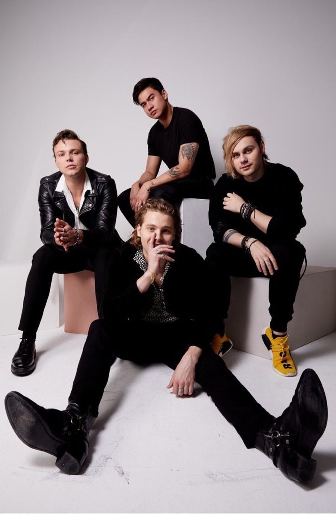
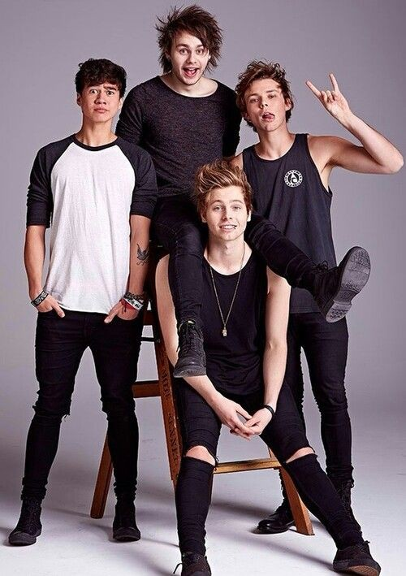
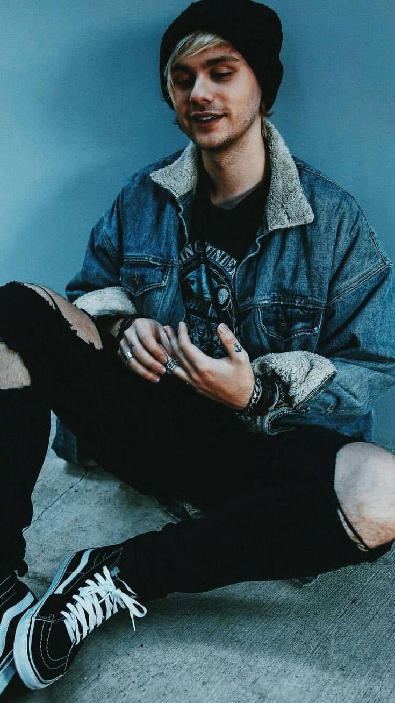
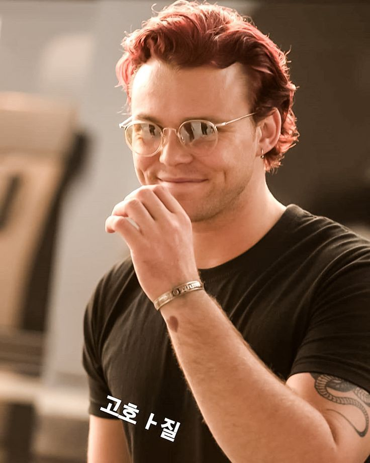

5SOS is a shortened word for 5 Seconds of Summer.They are an Australian pop rock band from Sydney, New South Wales, formed in late 2011. They originally began their career as YouTube celebrities, they rose to international fame while touring with English-Irish boy band 'One Direction' on their Take Me Home Tour. Since 2014, 5 Seconds of Summer have sold more than 10 million albums, sold over 2 million concert tickets worldwide, and the band's songs streams surpass 7 billion, making them one of the most successful Australian musical exports in history.
 Luke Hemmings was born in Sydney, Australia on July 16, 1996. He is the youngest child of Andrew and Liz Hemmings and was raised in Australia. He has two older brothers named Ben and Jack. While growing up, Luke attended Norwest Christian College, where he met his bandmates, Calum and Michael.
Michael Gordon Clifford was born in Sydney, Australia on November 20, 1995. He is the only child of his parents Karen and Daryl Clifford and was raised in Australia.Michael didn't develop a true interest in music until his parents bought him the video game Guitar Hero. He discovered that he had skill with the game and decided to take to serious guitar playing, soon becoming skilled in playing the instrument. While he was growing up, Michael attended Norwest Christian College where he met his fellow bandmates Calum and Luke. They hosted and played in several shows while at the College. Following his overwhelming interest in music, Michael didn’t complete his education in a bid to pursue a career in music 
Calum Thomas Hood was born on 25 January 1996 and raised in Mount Druitt, New South Wales.He is the son to David Hood and Joy Hood. Hood attended Norwest Primary School where he befriended future band-mate Michael Clifford in the third grade. For his high-school education, Hood attended Norwest Christian College where he befriended future band-mate Luke Hemmings in Year 7 after they performed a Secondhand Serenade cover at a school talent show. Throughout his childhood and early teenage years, Hood took a keen interest in sports, particularly soccer, which he had a "promising future" in and visited a Brazil training camp for, in order to pursue the sport as a career. However, after the formation of the band and due to the band's move to London in late 2012, he ultimately decided to stop playing soccer to instead pursue music
Ashton Fletcher Irwin was born on 7 July 1994 in Hornsby, New South Wales. His father is American while his mother is AustralianIrwin's uncle was a drummer in a death-metal band and his step-father played drums in a punk-rock band.Irwin learned how to play drums at nine years old after asking his step-father to teach him.Irwin helped raise his younger siblings, half-brother Harry and half-sister Lauren, whilst attending Richmond High School, from which he graduated in 2012.During his high school years, prior to the formation of 5 Seconds of Summer, Irwin formed a jazz-funk band called "Swallow the Goldfish" with his classmates. Ultimately departing from the band, Irwin pursued a year of higher education at a TAFE college, studying music, before choosing to leave due to his commitment to 5 Seconds of Summer. 
5SOSO have released 10 albums to date and more than 250 songs.Some of their sample albums include:
This album was officially released in 2018
This album was officially released in 2020